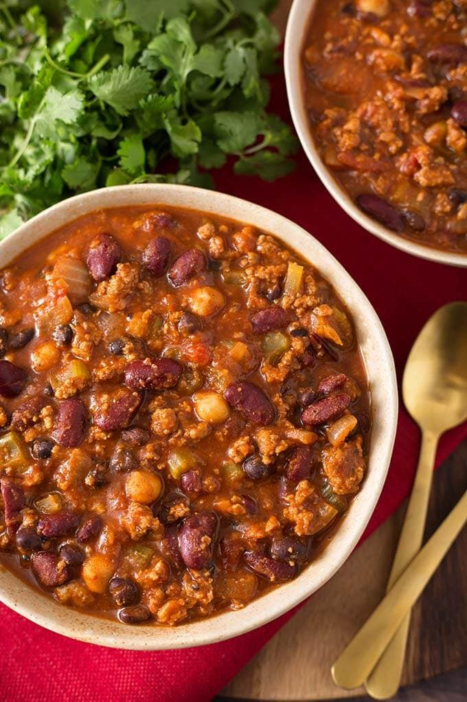

Slow Cooked Turkey Chili

Description
Easy to make, flavorful chili. Just toss it all into a slow cooker and come back to a great meal.
Ingredients
- 1 1/4 pounds lean ground turkey
- 1 can (28 ounce) crushed tomatoes
- 1 can (16 ounce) kidney beans, rinsed and dried
- 1 can (16 ounce) pinto beans, rinsed and dried
- 1 cup chicken stock
- 1 small onion, chopped
- 1 tablespoon chili powder
- 2 teaspoons salt
- 1 teaspoon minced garlic
- 1/2 teaspoon paprika
- 1/2 teaspoon dried oregano
- 1/2 teaspoon cayenne pepper, or more to taste
- 1/2 teaspoon ground cumin
- 1/2 teaspoon ground black pepper
- (Optional) 1 tablespoon hot sauce, or more to taste
- (Optional) sour cream
- (Optional) shredded cheddar
Steps
- Mix all ingredients together in a slow cooker; stir to break the turkey into small chunks.
- Cook on Low 6 to 8 hours (or High for 4 hours).
- (Optional) Stir in hot sauce and top your serving with sour cream and cheese.
- Enjoy!